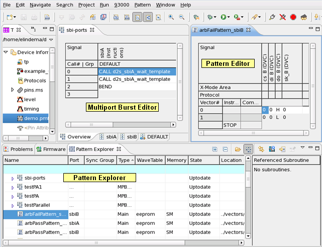

Pattern Tools
The pattern tools are used to create, edit, and debug patterns and bursts. The pattern tools are
- Pattern Explorer
- Pattern Editor
- Multiport Burst Editor

The Pattern Explorer is used to:
- Explore patterns contained in the loaded setup
- Create and delete patterns, port bursts, and multiport bursts.
- Edit bursts
- Start the Pattern Editor and the Multiport Burst Editor
The Pattern Editor is used to:
- Display the patterns of the loaded setup
- Edit patterns
- Analyze errors
Note Patterns containing more than 500,000 instructions cannot be opened in the Pattern Editor.
The Multiport Burst Editor is used to: see also Creating a multiport burst.
- Create and display port bursts
- Edit port bursts on both individual pages and the Overview page
- Display the timeline synchronization of multiport port bursts per sync group
- Analyze errors
Note How to disable Klipper. Klipper - a clipboard utility for the KDE
interface - causes problems when working with the SmarTest work center and the pattern debug
tool. To avoid copy and paste problems, we strongly recommend to switch off Klipper. The steps
may vary:
- If installed as application:
- On the task-bar, right-click the Klipper icon.
- Select Quit. The Automatically Start Klipper? dialog box is displayed.
- In the dialog box click Do Not Start.
- If installed as applet:
- On the task bar, to open the panel menu, for example, right-click the Panel button.
- Select .Note F330 Scan is obsolete since release 7.0.1. Therefore, the Eclipse-based pattern tools do not support F330 scan patterns. When trying to load an F330 scan pattern, you will get error messages like "Unsupported pattern type" and "WARNING: FW mnemonic [SCAN] not supported for label type". To view and edit an F330 scan pattern, you must load it in a SmarTest version prior to 6.5.2, which supports the previous legacy pattern debug tool.
Functional changes
- Introduced before SmarTest 6.3.2
- SmarTest 7.1.3: Multiport Burst Editor added